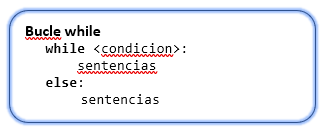

1º DAW - Programación - UT 3
Orientaciones
Orientaciones
Esta unidad de trabajo nos va a presentar las herramientas básicas de programación que se utilizan en todo programa. Se aprenderán los patrones estructural y modular.
Esta unidad es eminentemente práctica.
Es necesario el conocimiento de las unidades anteriores.
3.1. Introducción
En esta unidad de trabajo vamos a conocer todas las estructuras de control de lenguaje, ya estamos familiarizadas con ellas a través de pseudocódigo y de diagramas de flujo, pero vamos a implementarlas en código.
A la hora de programar, nos centraremos en hacer el código fácil de leer no más corto
La programación se empieza siempre en papel desarrollando el algoritmo
3.2. Condiciones
Las condiciones forman parte de gran cantidad de estructuras de control, con lo que es imprescindible dominarlas correctamente para una adecuada programación.
Una condición está formada por operandos y por operadores, el resultado final será generalmente un valor True o False
3.2.1. Operandos
Un operando es cualquier valor o variable que pueda ser comparada con un operador
3.2.2. Operadores
Un operador realiza la operación entre uno o varios operadores para dar el resultado.
Los operadores disponibles son:
- µ Operadores de pertenencia: in, not in.
- µ Operadores de ser lo mismo: is, not is.
- µ Operadores de expresiones: and y or son operadores en cortocircuito, o que no siguen evaluando la expresión si no es necesario.
- µ Operador de negación: not.
- µ Operadores de comparación: <, >, >=, <=, !=, ==.
- µ Operador morsa a partir de la versión 3.8 (:=).
3.2.3 Uso de condiciones
Una condición tiene siempre la estructura: operando operador operando [[and| or] …]para aquellos operandos binarios. O tiene la forma operador operando [[and| or] …] para los operadores unarios. El único operador unario que hemos visto es not.
En Python las condiciones se pueden encadenar de izquierda a derecha para formar una condición compleja: 5 < variable < 15 con el mismo significado que variable > 5 and variable < 15.
Ejercicio Resuelto
Crea las siguientes condiciones:
La variable numero mayor o igual que cinco
La variable numero mayor de tres y menor o igual que uno
La variable numero
La variable numero no es verdadera y no es mayor de cinco
La variable numero no es igual a “Hola”
La variable numero no es igual a la variable saltos
3.3 Estructuras alternativas o de selección
Esta estructura de control nos permite realizar acciones en función de una o varias condiciones, que pueden ser simples o complejas uniéndolas a través de los operandos and y or. En caso de no ser verdadera ninguna condición se ejecutará la parte else si está presente.
Los bloques elif y else son optativos y pueden aparecer ambos o solo uno de ellos. Además, se puede repetir el bloque elif tantas veces como requiramos para testear las condiciones necesarias elif es la abreviatura de else if. Python no tiene una estructura de control switch-case como otros lenguajes, se implementa mediante la condicional compuesta (actualización a 3.10 se ha incorporado la sentencia match que permite emular el comportamiento de los bloque switch de otros lenguajes).

En muchos lenguajes encontraremos el operador ternario (?:), en Python no existe tal operador, pero la estructura if nos facilita un uso similar. En este caso la variable adquirirá Valor si la <condición> es verdadera, si es falsa se le asignará Valor2.
Ejemplo
if compra <= 100:
print("Pago en efectivo")
elif compra > 100 and compra < 300:
print("Pago con tarjeta de débito")
else:
print("Pago con tarjeta de crédito")
if compra <= 100:
print("Pago en efectivo")
elif 100 < compra < 300
print("Pago con tarjeta de débito")
else:
print("Pago con tarjeta de crédito")
3.3.1. Ejercicios
Ejercicio Resuelto
- Escribe un programa que pide la edad por teclado y nos muestra el mensaje de “Eres mayor de edad” solo si lo somos.
- Escribe un programa que pide la edad por teclado y nos muestra el mensaje de “eres mayor de edad” o el mensaje de “eres menor de edad”.
- Escribe un programa que lee dos números, calcula y muestra el valor de su suma, resta, producto y división. (Ten en cuenta la división por cero).
- Escribe un programa que lee 2 números y muestra el mayor.
- Escribe un programa que lee un número y me dice si es positivo o negativo, consideraremos el cero como positivo.
- Escribe un programa que lee dos números y los visualiza en orden ascendente.
- Escribe un programa que lee dos números y nos dice cuál es el mayor o si son iguales.
- Escribe un programa que lea tres números distintos y nos diga cuál es el mayor.
- Escribe un programa que lea una calificación numérica entre 0 y 10 y la transforma en calificación alfabética, escribiendo el resultado.
- de 0 a <3 Muy Deficiente.
- de 3 a <5 Insuficiente.
- de 5 a <6 Bien.
- de 6 a <9 Notable
- de 9 a 10 Sobresaliente
- Escribe un programa que recibe como datos de entrada una hora expresada en horas, minutos y segundos que nos calcula y escribe la hora, minutos y segundos que serán, transcurrido un segundo.
- Escribe un programa que calcula el salario neto semanal de un trabajador en función del número de horas trabajadas y la tasa de impuestos de acuerdo a las siguientes hipótesis:
- Las primeras 35 horas se pagan a tarifa normal.
- Las horas que pasen de 35 se pagan a 1,5 veces la tarifa normal.
- Las tasas de impuestos son:
- Los primeros 500 euros son libres de impuestos.
- Los siguientes 400 tienen un 25% de impuestos.
- Los restantes un 45% de impuestos.
- Escribir nombre, salario bruto, tasas y salario neto.
- Implementa un programa que pida al usuario por teclado sus datos personales en orden apellido1-apellido2-nombre y los muestre por pantalla en orden nombre-apellido1-apellido2.
3.4 Estructuras de repetición
Las estructuras de repetición realizan un número finito de vueltas sobre el código que contienen. Es muy importante esa característica, debe ser finito, ya que si no controlamos correctamente la condición de finalización podemos hacer que nuestro programa entre en un bucle cerrado o infinito.
fin=False
while not fin:
print("Pago en efectivo")
print("Fin”) # Esta instrucción no se ejecutará nunca
fin=False
while not fin:
print("Pago en efectivo")
fin = True
print("Fin”) # Ahora sí, el bucle finaliza
3.4.1 Función range
La función range se usa para devolver una lista de números secuenciales. Esta función se utiliza para simular los bucles secuenciales de otros lenguajes. La sintaxis de la función es range(inicio, fin, paso). Los parámetros se explican por sí solos, pero hay que tener cuenta que el parámetro fin no estará incluido en la lista final.
- range(5) # 0 1 2 3 4
- range(5, 10) # 5 6 7 8 9
- range(0, 10, 3) # 0 3 6 9
3.4.2. Bucles
For
En lugar de siempre iterar sobre una progresión aritmética de números (como en Pascal) o darle al usuario la posibilidad de definir tanto el paso de la iteración como la condición de fin (como en C), la sentencia for de Python itera sobre los ítems de cualquier secuencia (una lista o una cadena de texto), en el orden que aparecen en la secuencia, por eso se hace imprescindible el uso de range.
La parte else se ejecuta cuando termina la sentencia for siempre y cuando no se haya salido del bucle con una instrucción break que veremos a continuación, este bloque también admite la sentencia continue. Por último, indicar que la lista que se recorre se puede modificar dentro del bucle sin problemas.
Ejemplo
for valor in range(5):
print(“El valor es”, valor)
words = ['cat', 'window', 'defenestrate']
for w in words:
print(w, len(w))
While

La sentencia while se usa para la repetir la ejecución del bloque siempre que una expresión sea verdadera. Como en el caso anterior, la parte else se ejecutará siempre que no se salga del bucle a través de break. Es en este bucle donde hay que tener especial cuidado con la terminación, por lo que siempre modificaremos la condición dentro del bucle de manera que se llegue a algún fin. Este bucle también admite las sentencias break y continue como el anterior.
3.4.3. Ejercicios
Ejercicio Resuelto
13. Desarrolla un programa que, una vez ejecutado, lea información desde teclado hasta que reciba la cadena de entrada "FIN".
14. Implementa un programa que reciba como parámetro un dígito correspondiente a un año y calcula si es o no bisiesto.
15. Escribe un programa calculadora que reciba como parámetros dos enteros (num1 y num2) desde su llamada y que los muestre por pantalla. A continuación, se deberá solicitar al usuario que seleccione la operación matemática a realizar entre los dos números. Las operaciones que implementará serán suma, resta, multiplicación, división y potencia.
16. Desarrolla un programa que pregunte por pantalla un número N y que, una vez leído, imprima una pirámide N filas.
Número de filas: 5
*
***
*****
*******
*********
17. Utilizando la sentencia de control if, implementa un programa que pida un número por teclado y que indique por pantalla a qué mes se corresponde.
18. Realiza un programa que muestre por pantalla los 20 primeros números naturales (1, 2, 3... 20).
19. Realiza un programa que muestre los números pares comprendidos entre el 1 y el 200. Para ello utiliza un contador y suma de 2 en 2.
3.5. Estructuras de salto
Python no incorpora ninguna sentencia de ruptura de secuencia parecida a goto de otros lenguajes, esta sentencia no hace más que introducir problemas y está completamente desaconsejada. En aquellos lenguajes que aparece, permite saltar de forma arbitraria a otro punto de la ejecución.
3.5.1. Break y continue
Las sentencias break y continue sirven para romper la secuencia actual de un bucle. En caso de la sentencia break termina completamente el bucle y con la sentencia continue salta al comienzo del bucle haciendo que las condiciones se reevalúen.
for n in range(2, 10):
for x in range(2, n):
if n % x == 0:
print(n, 'equals', x, '*', n//x)
break # termina el bucle de la x
else:
# loop fell through without finding a factor
print(n, 'is a prime number')
for num in range(2, 10):
if num % 2 == 0:
print("Found an even number", num)
continue # salta al comienzo del bucle
print("Found an odd number", num)
3.5.2. Ejercicios
Ejercicio Resuelto
20. Realiza un programa que muestre los números pares comprendidos entre el 1 y el 200. Esta vez utiliza un contador sumando de 1 en 1.
21. Realiza un programa que muestre los números desde el 1 hasta un número N que se introducirá por teclado.
22. Realiza un programa que lea un número positivo N y calcule y visualice su factorial N! Siendo el factorial:
0! = 1
1! = 1
2! = 2 * 1
3! = 3 * 2* 1
N! = N * (N-1) * (N-2)........* 3*2*1
23. Realiza un programa que lea 10 números no nulos y luego muestre un mensaje de si ha leído algún número negativo o no.
24. Realiza un programa que lea 10 números no nulos y luego muestre un mensaje indicando cuántos son positivos y cuantos negativos.
25. Realiza un programa que lea una secuencia de números no nulos hasta que se introduzca un 0, y luego muestre si ha leído algún número negativo, cuantos positivos y cuantos negativos.
26. Realiza un programa que calcule y escriba la suma y el producto de los 10 primeros números naturales.
3.6. Ejercicios
- Contar el número de veces que aparece una letra en una frase, pedidas ambas al usuario.
- Similar al anterior, pero a partir de una posición inicial pedida al usuario.
- Encontrar si una subcadena está en una cadena, pedidas al usuario. Devolverá la posición de la subcadena en caso de estar o Fase si no lo está.
- Crear la cadena inversa a dos cadenas concatenadas que se pedirán al usuario.
- A partir de una cadena que tiene separadores dividirla y mostrarla en sus partes. Se pedirá al usuario tanto el separador como la cadena.
- Ejemplo: separador: - cadena: la-casa-alta
mostrará:
la
casa
alta
- Crear un menú que termine cuando se pulse salir. Tendrá tres opciones más que mostrará solo el texto de la opción seleccionada.
- A partir de la velocidad inicial de un móvil pedida al usuario, se calculará la distancia en los n primeros segundos (pedidos al usuario) mostrando la distancia segundo a segundo.
- Dibujar con letras N y B un tablero de ajedrez
3.7. Prueba y depuración de programas
Todo programa deberá ser testado mediante un conjunto de pruebas que garanticen que sea operativo, cumpla con los requisitos estipulados e incluya comentarios aclaratorios. Al proceso mediante el cual se corrigen estos errores del programa se le conoce como depuración e implica una serie de tareas:
- µ La inspección del código.
- µ La utilización de baterías de prueba.
- µ La prueba de todos y cada uno de los módulos (pruebas unitarias).
- µ La corrección de los errores detectados, teniendo en cuenta que ante cada modificación del código pueden surgir nuevos errores.
Actuaciones realizar:
- Todo programa hay que probarlo para asegurar el funcionamiento.
- Todo programa hay que documentarlo, tanto de forma interna como externa.
- La tarea de corrección de un programa se llama depuración y engloba.
- La inspección del código.
- La utilización de baterías de prueba.
- La prueba de todos y cada uno de los módulos (pruebas unitarias).
- La corrección de los errores detectados, teniendo en cuenta que ante cada modificación del código pueden surgir nuevos errores
3.7.1. PyCharm
Nuestro entorno es PyCharm, pero cualquier IDE tiene las mismas herramientas, incluso probablemente utilizará los mismos iconos para los mismos conceptos. La Ventana de depuración es la siguiente.
- Debugger. Permite acceder a la ventana de gestión.
- Console. Permite ver la salida del programa, se debe configurar la opción Emulate terminal in output console en las propiedades de ejecución del programa.
- Step Over (F8). Ejecuta la siguiente línea de código, si es una llamada a una función o método no entra y se ejecuta de una vez.
- Setp into (F7). Ejecuta la siguiente línea de código, si es una función entra y se para en la primera línea de la función o método.
- Step out (Mayus+F8). Sale de la ejecución de la función actual.
- Run tu cursor (Alt+F9). Ejecuta hasta la posición actual del cursor de texto.
- Evaluar expresión. Permite introducir una expresión y ver su resultado.
Desde el área de inspección podemos acceder a las variables activas en ese momento y ver su contenido, desplegando cada miembro de un objeto.
La ventana de Inspección permite algunas otras funciones interesantes al pulsar con el botón derecho del ratón, entre las que están cambiar el valor de una variable (Set Value), añadir a la lista de variables inspeccionadas (Add to Watches) y establecer cómo ver una variable (View As).
3.7.2. Elementos de la depuración
Para depurar correctamente debemos hacer uso de las herramientas que los depuradores nos presentan. En concreto podemos hablar de:
- Punto de ruptura. Se sitúan en cualquier línea de código que no sea de definición (def, class) y parará la ejecución del programa en es punto. Un punto de ruptura es un marcador en línea de código ejecutable (no pueden ser comentarios) en la que parará el depurador al llega a ella. Se establece pulsando en el área marcada por la flecha o situando el cursor en la línea correspondiente y pulsando Ctrl+F8.
- Ejecución paso a paso. Permite ejecutar la siguiente instrucción o la siguiente función pero sin seguir la ejecución completa del programa, es decir, volverá a parar tras su ejecución.
- Inspección de variables y evaluación de expresiones. La primera permite ver en todo momento el contenido de una variable, la segunda permite ver el resultado de una expresión sin modificar el flujo de ejecución.
3.7.3. Ejercicio
Ejercicio Resuelto
Depura el siguiente código y encuentra todos los errores.
- Establecer puntos de ruptura. Es importante determinar dónde poner los puntos de ruptura, generalmente al comienzo de un bloque o justo antes de la instrucción que no esté dando problemas.
- Lanzar el programa. El programa se puede ejecutar en modo depuración igual que en modo normal, con el botón derecho del ratón, pero en vez de utilizar el comando Run, pulsaremos sobre el comando Debug. Si todo va bien el programa se ejecutará y entrará en modo depuración en el punto de ruptura. La línea en la que está parado el programa se resalta en otro color y la ventana de depuración aparece, habilitándose los botones superiores de ejecución.
- A partir de este momento podemos ejecutar línea a línea, entrando en las funciones, inspeccionar o cambiar el valor de cualquier variable, o seguir la ejecución hasta la siguiente parada o finalización.
- Repetiremos el proceso hasta que el programa esté libre de errores.
- Encontrar los errores del programa. Las especificaciones son las siguientes: Para aquellas personas mayores de edad pedirá su fecha de nacimiento en formato YYYYMM (año cuatro dígitos_mes dos dígitos) encontrando la edad que tiene en años y en meses desde un año pedido. El programa saldrá cuando se teclee la palabra Fin.
- Introducir en edad: 17, 18 y 19, ver qué ocurre, depurar con los tres valores.
- Con edad >18, introducir un valor de año y comprobar los resultados.
- Con edad>18, introducir una fecha posterior al año de cálculo.
- Comprobar la salida del programa, debe pedirse siempre y ser coherente.
- Probar el programa con varias fechas y años.
edad = int(input("Introduce tu edad:"))
fin = False
while not fin:
if edad > 18:
fecha_nacimiento = int(input("Introduce la fecha de nacimiento (YYYYMM):"))
anio_actual = int(input("Introduce el año de cálculo (YYYY):"))
anio_nacimiento = fecha_nacimiento // 10000
meses = fecha_nacimiento % 100
edad = anio_actual - anio_nacimiento
edad_calculada_meses = edad * 12 + meses
if edad_calculada > 0:
print("Tu edad es:", edad, "en años")
print("Tu edad es:", edad_calculada_meses, "en meses")
else:
print("Datos erróneos")
fin = input("Fin(Si)?") == 'si'
3.8. Documentación del código del programa
La idea de tener que documentar un programa genera en el programador un rechazo inmediato. Son de esas cosas que sabemos que son buenas y debemos procurar, pero definitivamente no nos fascinan. Pero, la verdad es ésta: no importa lo fabuloso que sea un programa, nadie lo usará si no queda claro la manera de utilizarlo. En este sentido la documentación juega un rol primordial. Y aunque yo sea el único usuario de mi programa, resulta más sencillo entender y reutilizar lo que escribí hace seis meses si cuento con una documentación adecuada. Python proporciona un mecanismo bastante sencillo y conveniente para elaborar la documentación técnica de un programa.
- Existe la documentación interna y la externa:
- Interna, explicación del propio código
- Externa, documentación para crear la aplicación
3.8.1. Cadenas de documentación
Python, un docstring o cadena de documentación es una literal de cadena de caracteres que se coloca como primer enunciado de un módulo, clase, método o función, y cuyo propósito es explicar su intención.
def promedio(a, b):
'Calcula el promedio de dos números.'
return (a + b) / 2
def formula_cuadratica(a, b, c):
"""Resuelve una ecuación cuadrática.
Devuelve en una tupla las dos raíces que resuelven la
ecuación cuadrática:
ax^2 + bx + c = 0.Utiliza la fórmula general.
Parámetros:
a -- coeficiente cuadrático (debe ser distinto de 0)
b -- coeficiente lineal
c -- término independiente.
Excepciones:
ValueError -- Si (a == 0)
"""
if a == 0:
raise ValueError(
'Coeficiente cuadrático no debe ser 0.')
from cmath import sqrt
discriminante = b ** 2 - 4 * a * c
x1 = (-b + sqrt(discriminante)) / (2 * a)
x2 = (-b - sqrt(discriminante)) / (2 * a)
return (x1, x2)
La cadena de documentación en el segundo ejemplo es una cadena multi-líneas, la cual comienza y termina con triples comillas ("""). Aquí se pueden observar el uso de las convenciones establecidas en el PEP 257 (Python Enhancement Proposals):
µ La primera línea de la cadena de documentación debe ser una línea de resumen terminada con un punto. Debe ser una breve descripción de la función que indica los efectos de ésta como comando. La línea de resumen puede ser utilizada por herramientas automáticas de indexación; es importante que quepa en una sola línea y que esté separada del resto del docstring por una línea en blanco. El resto de la cadena de documentación debe describir el comportamiento de la función, los valores que devuelve, las excepciones que arroja y cualquier otro detalle que consideremos relevante. Se recomienda dejar una línea en blanco antes de las triples comillas que cierran la cadena de documentación.
Todos los objetos documentables (módulos, clases, métodos y funciones) cuentan con un atributo __doc__ el cual contiene su respectivo comentario de documentación.
A partir de los ejemplos anteriores podemos inspeccionar la documentación de las funciones promedio y formula_cuadratica desde el shell de Python:
>>> promedio.__doc__
'Calcula el promedio de dos números.'
Sin embargo, si se está usando el shell de Python es mejor usar la función help(), dado que la salida producida queda formateada de manera más clara y conveniente:
>>> help(promedio)
Help on function promedio in module __main__:
promedio(a, b)
Calcula el promedio de dos números.
Ciertas herramientas, por ejemplo, shell o editores de código, pueden ayudar a visualizar de manera automática la información contenida en los comentarios de documentación. La siguiente imagen muestra como el shell del ambiente de desarrollo integrado IDLE muestra la línea de resumen como descripción emergente (tool tip) al momento en que un usuario teclea el nombre de la función:
De esta manera un usuario puede tener a su alcance de manera sencilla toda la información que necesita para poder usar nuestras funciones.
3.8.2. Conclusiones
El uso de docstrings en Python facilita la escritura de la documentación técnica de un programa. Escribir una buena documentación requiere de disciplina y tiempo, pero sus beneficios se cosechan cuando alguien (quizás mi futuro yo dentro de seis meses) necesita entender qué hace nuestro software. Los docstrings no sustituyen otras buenas prácticas de programación, como son el uso apropiado de comentarios o el empleo de nombres descriptivos para variables y funciones, por lo que resulta importante utilizar todas estas prácticas de manera conjunta.
3.9. Cuestiones de Estilo
Una guía de estilo es un sencillo documento que recoge la forma en que los desarrolladores tienen que escribir su código. Si todos los desarrolladores siguen las recomendaciones de la guía, conseguiremos que nuestro proyecto tenga un estilo consistente. Normalmente, una buena guía de estilo debería:
- Promover que el código sea inteligible.
- Promover que el código esté organizado en unidades de trabajo comprensibles (funciones no más extensas de un cierto número de líneas, organización en párrafos, etc.).
- Definir las convenciones de nombres de variables, estilo de espaciados, etc.
- Indicar cómo comentar el código.
Las guías de estilo nos proporcionarán múltiples ventajas, entre las que se encuentra entenderlo mejor a nosotros y a cualquier programador; permitir un mejor mantenimiento y modificación; generar código legible y muchas otras.
Python, como todos los lenguajes, tiene una guía de estilo, en este caso se llama PEP-8 que la podemos encontrar (en español: http://www.recursospython.com/pep8es.pdf) en: https://www.python.org/dev/peps/pep-0008/
Entre las recomendaciones que implica esta guía podemos encontrar las siguientes:
- µ Usar cuatro espacios en vez de tabuladores.
- µ Escribir líneas de 79 caracteres máximo.
- µ Después de la definición de una función añadir una línea en blanco.
- µ Usar los comentarios de una línea.
- µ Utilizar espacios alrededor de los operadores.
- µ El nombrado de clases debería ajustarse a: NombreClase
- µ El nombrado de funciones y variables debería ajustarse a: nombre_funcion
3.10. Ejercicios
27. Realiza un programa que lea una secuencia de notas (con valores que van de 0 a 10) que termina con el valor -1 y nos dice si hubo o no alguna nota con valor 10.
28. Realiza un programa que sume independientemente los pares y los impares de los números comprendidos entre 100 y 200, y luego muestra por pantalla ambas sumas.
29. Realiza un programa que calcule el valor A elevado a B (A^B) sin hacer uso del operador de potencia (^), siendo A y B valores introducidos por teclado, y luego muestre el resultado por pantalla.
30. Realiza un programa donde el usuario "piensa" un número del 1 al 100 y el ordenador intenta adivinarlo. Es decir, el ordenador irá proponiendo números una y otra vez hasta adivinarlo (el usuario deberá indicarle al ordenador si es mayor, menor o igual al número que ha pensado).
31. Realiza un programa que dada una cantidad de euros que el usuario introduce por teclado (múltiplo de 5 €) mostrará los billetes de cada tipo que serán necesarios para alcanzar dicha cantidad (utilizando billetes de 500, 200, 100, 50, 20, 10 y 5). Hay que indicar el mínimo de billetes posible. Por ejemplo, si el usuario introduce 145 el programa indicará que será necesario 1 billete de 100 €, 2 billetes de 20 € y 1 billete de 5 € (no será válido por ejemplo 29 billetes de 5 que, aunque sume 145 € no es el mínimo número de billetes posible).
32. Realiza un programa que cuente los múltiplos de 3 desde el 1 hasta un número que introducimos por teclado.
33. Realiza un programa en que pida un número entero positivo y nos diga si es primo o no.
34. Realiza un programa que lea y acepte únicamente aquellos que sean mayores que el último dado. La introducción de números finaliza con la introducción de un 0. Al final se mostrará:
El total de números introducidos, excluido el 0.
El total de números fallados.
35. Realiza un programa para calcular la suma de los cuadrados de los 5 primeros números naturales.
36. Realiza un programa que lea un número y a continuación escriba el carácter “*” tantas veces igual al valor numérico leído. En aquellos casos en que el valor leído no sea positivo se deberá escribir un único asterisco.
37. Realiza un programa que pida un número entero N entre 0 y 20 y luego muestre por pantalla los números desde 1 hasta N, uno en cada línea, repitiendo cada número tantas veces como su valor.
38. Realiza un programa que pida dos números enteros A y B, siendo B mayor que A. Luego visualiza los números desde A hasta B e indicar cuantos hay que sean pares. Ejemplo:
39. Crea un programa que pida al usuario un número entero y muestre su cuadrado. Se repetirá mientras el usuario introduzca un número distinto de cero.
40. Crea un programa que muestre la "tabla de multiplicar del 5", usando “while” y después "for”
41. Crea un programa que muestre los números del 1 al 20, excepto el 15, usando "for" y "continue".
42. Crea un programa que pida al usuario su login y su contraseña. Se repetirá hasta que el usuario introduzca como login "1809" y como contraseña "1234". Hazlo con while.
43. Crea un programa que pida un número de tipo byte al usuario y escriba en pantalla un cuadrado formado por asteriscos, que tendrá como alto y ancho la cantidad introducida por el usuario. Hazlo de dos formas, usando “while” y “for.
3.11. Programación modular
Tiene por finalidad obtener algoritmos que se basan en la descomposición reiterada del problema inicial en subproblemas más simples. En esta descomposición una acción se dividirá en otras. El proceso se repite hasta que todas las acciones sean inmediatamente identificables.
Ejemplo
Fichar todos los libros de una biblioteca
1. Primer nivel:
Mientras queden libros sin fichar Hacer
Fichar un libro
Fin Mientras
2. Segundo nivel:
Fichar un libro:
Coger un libro de los no fichados
Darle un número de referencia
Coger ficha
Escribir en ella el nombre del libro
Escribir el nombre del autor
Escribir la editorial
Escribir el número de referencia
Duplicar la ficha
Poner la ficha en el libro
Poner la otra ficha en el fichero
3. Tercer nivel:
Poner la otra ficha en el fichero:
Mirar la primera ficha del fichero
Mientras la ficha del fichero se anterior Hacer
Pasar una ficha del fichero
Fin Mientras
Colocar la ficha en el fichero
3.11.1 Funciones
Python permite diversos paradigmas de programación y se pueden mezclar en un mismo fichero. En concreto el paradigma de programación modular determina crear códigos independientes que realizan una función y pueden o no retornar un valor: funciones y procedimientos. Para llamar a una función se utilizará su nombre y entre paréntesis se le pasarán los parámetros correspondientes.
Diferencias entre funciones y procedimientos
Formalmente una función y un procedimiento no es lo mismo. Una función es una sección de un programa que calcula un valor de manera independiente al resto del programa que tiene tres partes: parámetros de entrada, proceso o código y resultado. Por otro lado, un procedimiento solo tiene dos partes: entrada y proceso, no devuelve nada.
A nivel de código la diferencia principal es que en los procedimientos no encontraremos una sentencia return, mientras que en las funciones sí.
Bajo Python, no existen los procedimientos, incluso si omitimos la sentencia return en nuestra definición, el intérprete devolverá de forma predefinida None como valor de nuestra función.
Para Python como para el resto de lenguajes, una función es un bloque de código con autonomía propia de ejecución que podremos reutilizar. La mayor diferencia con los lenguajes tradicionales es que es un objeto con sus propiedades y métodos. Una función se puede definir en cualquier parte del código, aunque es recomendable estructurar el código en módulos.
Para que una función esté bien definida según la guía de estilo, ésta no debe ocupar más de veinticinco a treinta líneas de código.
Definición
La palabra reservada def se usa para definir funciones. Debe seguirle el nombre de la función y la lista de parámetros formales entre paréntesis . Las sentencias que forman el cuerpo de la función empiezan en la línea siguiente y deben estar con sangría. La sentencia return final es optativa y representa el valor devuelto por la función cuando es utilizada como parte derecha de una asignación.
def fib(n): # write Fibonacci series up to n
"""Print a Fibonacci series up to n."""
a, b = 0, 1
while a < n:
print(a, end=' ')
a, b = b, a+b
print()
return False
Esta definición se encontrará dentro de una definición de clase si es un método o fuera de ella si es una función, el resto del apartado trataremos como si se encontrase dentro de una clase, pero omitiremos el primer parámetro.
La primera sentencia del cuerpo de la función puede ser opcionalmente una cadena de texto literal; esta es la cadena de texto de documentación de la función, o docstrings para documentación.
Se pueden devolver varios valores separándolos con comas
def suma_multiplicacion(num_1, num_2):
return num1_+ num2, num_1 * num_2
Ámbito de las variables
El ámbito es la zona de código que tiene acceso una variable. Python, como todos los lenguajes, tiene varios ámbitos para definir las variables uno local, uno nonlocal y otro global. Por defecto estos ámbitos no se mezclan y no podemos hacer uso de uno dentro del otro. El ámbito local se corresponde con el nivel de función, el ámbito global con el de programa, el nonlocal con una función interna.
Para modificar una variable definida en el programa deberemos anteponer la palabra clave global y el nombre de la variable para poder usarla. Nunca podremos cambiar una variable local fuera de la función que la defina, aunque sí podremos acceder a ella sin especificar global si no la modificamos.
mi_var_global = 3
def mi_fun():
global mi_var_global
mi_var_global = 4
mi_fun()
print(mi_var_global)
En una clase no se debería acceder nunca a una variable global.
Del mismo modo, si dentro de una función interna a otra, queremos acceder al bloque de la función padre deberemos usar la palabra clave nonlocal, que nos da acceso al bloque inmediatamente superior, como en el ejemplo siguiente.
g = 5
def miFunc2():
global g
g = 6
b = 6
def miInterna():
nonlocal b # accedemos a la b externa
global g
b = 7
g = 8
miInterna()
print(b, g)
miFunc2() # 7,8
print(g) # 8
Parámetros
Un parámetro es un valor que se le pasa al método o función, un valor que espera para realizar su trabajo. Como Python define el tipo de una variable (parámetro en este caso) en tiempo de ejecución, no es necesario determinarlo en el parámetro, y no solo eso, el mismo parámetro aceptará cualquier tipo de datos para su ejecución, por lo que tendremos que realizar una conversión explícita si fuera necesario.
def suma(numero_1, numero_2):
print(numero_1 + numero_2)
suma(2,3)
suma(2) # Error faltan parámetros
Parámetros de Entrada – Salida
El comportamiento común de un parámetro es como entrada, esto quiere decir que recibirá un dato almacenado en el parámetro enviado desde el contexto en el que se llama a la función, se utilizará dentro de la función y no se modificará.
Los parámetros de salida permiten modificar el valor de una variable externa a la función relacionada con el parámetro. De esta manera, si la función modifica el valor del parámetro, la variable externa relacionada a este parámetro se modificará también, inclusive después de que la función haya terminado de ejecutarse.
En Python todos los parámetros son de entrada.
3.11.2 Juego del ahorcado
Primer nivel
Acción Juego del Ahorcado
Acción Juego del Ahorcado
Pedir la palabra al primer jugador
Jugar con el segundo
Fin Acción
Segundo nivel
Acción Pedir la palabra al primer jugador
Imprimir “Palabra?”
Leer Palabra
Borrar la pantalla
Fin Acción
Acción Jugar con el segundo
numero_fallos = 0
letras_faltan = palabra
letras_adivinadas= “-“ * longitud(palabra)
Mientras no_acabe_el_juego Hacer
Pedir letra al segundo jugador
Evaluar jugada
Fin mientras
Fin Acción
no_acabe_el_juego será cuando numero_fallos <= 10 y letras_adivinadas <> palabra
Tercer nivel
Acción Pedir letra al segundo jugador
Acción Pedir letra al segundo jugador
Imprimir letras_acertadas, “Letra?”
Leer letra
Fin Acción
Acción Evaluar jugada
numero_aciertos_letra = 0
Para índice = 0 hasta longitud(letras_faltan) Hacer
Si letras_faltan[índice] = letra Entonces
letras_acertadas[índice] = letra
letras_faltan[índice] = “-“
numero_aciertos_letra += 1
Fin si
Fin para
Si numero_aciertos_letra = 0 Entonces
Numero_fallos += 1
Fin Si
Fin Acción
3.11.3 Recomendaciones
- Crear los algoritmos en papel
- Buscar código repetido y crear funciones o procedimientos con dicho código
- Se deben devolver uno o dos elementos en la función
- En caso de devolver más crear un objeto para contenerlo (listas, tuplas, clase…)
- Deben tener un tamaño corto
- Los parámetros siempre serán de entrada, no utilizarlos para salida
- Tendrán un único punto de entrada y un único punto de salida (return), la última línea
3.12. Ejercicios
Ejercicio Resuelto
52. Hacer una función que intercambie dos variables globales
53. Hacer una función que intercambie dos variables que se les pasa
54. Hacer una función que valide un argumento, de tal manera que devolverá verdadero si está entre 5 y 50, en otro caso devolverá falso.
55. Hacer una función que devuelva el valor absoluto de un número.
56. Hacer una función que convierta coordenadas polares a (radio y ángulo) en rectangulares (x,y). x= radio*cos(a), y = radio*sin(a).
57. Crear una función que nos valide una fecha.
Ejercicio Resuelto
58. Hacer el juego de MasterMind para cuatro columnas y seis fichas (ABCDEF). Se eligen al azar 4 de las fichas con repetición y se colocan en orden. El jugador colocará como desee cuatro fichas y se darán como pista las que están bien colocadas con un + y las que están, pero mal colocadas con un –. El juego termina cuando se colocan todas bien colocadas.
Elección: ACBC
El usuario pone Bien Mal No están Pistas
BBBB --B- ---- BB-B +
ABCD A--- -BC- ---D +--
CCEE -C-- C--- --EE +-
EECC ---C --C- EE-- +-
ACCB AC-- --CB ---- ++--
Ejercicio Resuelto
59. Diseña un programa que calcule el máximo de 5 números enteros. Intenta resolverlo con un ((candidato a valor máximo)) que se va actualizando al compararse con cada número.
60. Diseña un programa que, dados cinco números enteros, determine cuál de los cuatro ´últimos números es más cercano al primero. (Por ejemplo, si el usuario introduce los números 2, 6, 4, 1 y 10, el programa responder ‘a que el número más cercano al 2 es el 1.).
61. Un vector en un espacio tridimensional es una tripleta de valores reales (x, y, z). Deseamos confeccionar un programa que permita operar con dos vectores. El usuario verá en pantalla un menú con las siguientes opciones:
1) Introducir el primer vector
2) Introducir el segundo vector
3) Calcular la suma
4) Calcular la diferencia
5) Calcular el producto escalar
6) Calcular el producto vectorial
7) Calcular el ´ángulo (en grados) entre ellos
8) Calcular la longitud
9) Finalizar
62. Implementa un programa que lea de teclado una cadena que representa un número binario. Si algún carácter de la cadena es distinto de ’0’ o ’1’, el programa advertirá al usuario de que la cadena introducida no representa un número binario y pedirá de nuevo la lectura de la cadena. En caso de ser correcta mostrará el valor binario.
63. Hay un tipo de pasatiempos que propone descifrar un texto del que se han suprimido las vocales. Por ejemplo, el texto ((.n .j.mpl. d. p.s.t..mp.s)), se descifra sustituyendo cada punto con una vocal del texto. La solución es ((un ejemplo de pasatiempos)). Diseña un programa que ayude al creador de pasatiempos. El programa recibirá una cadena y mostrará otra en la que cada vocal ha sido reemplazada por un punto. If letra in “aeiou” remplazar por .
64. Una de las técnicas de criptografía más rudimentarias consiste en sustituir cada uno de los caracteres por otro situado n posiciones más a la derecha. Si n = 2, por ejemplo, sustituiremos la ((a)) por la ((c)), la ((b)) por la ((e)), y así sucesivamente. El problema que aparece en las últimas n letras del alfabeto tiene fácil solución: en el ejemplo, la letra ((y)) se sustituirá por la ((a)) y la letra ((z)) por la ((b)). La sustitución debe aplicarse a las letras minúsculas y mayúsculas y a los dígitos (el ((0)) se sustituye por el ((2)), el ((1)) por el ((3)) y así hasta llegar al ((9)), que se sustituye por el ((1))). Diseña un programa que lea un texto y el valor de n y muestre su versión criptografía.
65. Hacer un programa que calcule la corona circular pidiendo los dos radios, pero usando una función que calcule el área de un círculo.
66. Hacer un programa que pida dos listas y calcule la suma vectorial y el producto definido según el siguiente ejemplo usando una función para cada operación
(a,b,c) + (d,e,f) -> (a+d,b+e,c+f) (a,b,c) * (d,e,f) -> a*d+b*e+c*f
67. Hacer un programa que calcule el máximo y el mínimo de 5 elementos guardados en una lista
--> con una función para max y otra para min
--> con una función solo y un parámetro que indique si es máx o min
68. Hacer un programa que pida dos conjuntos de 5 elementos (los conjunto no tienen elementos repetidos) y nos haga la unión y la intersección con funciones
Ejercicio
69. Encontrar todos los números que son amigos hasta un número pedido. Dos números son amigos si la suma de sus divisores es igual al otro número y viceversa:
284 --> 1+2+4+71+142 = 220
220 --> 1+2+4+5+10+11+20+22+44+55+110 = 284
70. Diseña un programa que permita jugar a dos personas al tres en raya.
Resumen
{"id":"4a770580-6ba9-41fa-ba3d-990b78a9912b","title":"Estructuras de control","mindmap":{"root":{"id":"bffdb79e-7d01-4df7-b851-c0ef696609ef","parentId":null,"text":{"caption":"Estructuras de control","font":{"style":"normal","weight":"bold","decoration":"none","size":20,"color":"#000000"}},"offset":{"x":0,"y":0},"foldChildren":false,"branchColor":"#000000","children":[{"id":"6e2f010b-099c-4ae0-9749-60ad537c43db","parentId":"bffdb79e-7d01-4df7-b851-c0ef696609ef","text":{"caption":"Expresiones","font":{"style":"normal","weight":"normal","decoration":"none","size":15,"color":"#000000"}},"offset":{"x":122,"y":-79},"foldChildren":false,"branchColor":"#8f3c4f","children":[{"id":"4190a916-5311-45a2-8d80-38a3de8cce43","parentId":"6e2f010b-099c-4ae0-9749-60ad537c43db","text":{"caption":"Operadores","font":{"style":"normal","weight":"normal","decoration":"none","size":15,"color":"#000000"}},"offset":{"x":116,"y":-41},"foldChildren":false,"branchColor":"#8f3c4f","children":[{"id":"cb7dfc40-e32f-45f3-9224-3c65d06746aa","parentId":"4190a916-5311-45a2-8d80-38a3de8cce43","text":{"caption":"Operador ternario","font":{"style":"normal","weight":"normal","decoration":"none","size":15,"color":"#000000"}},"offset":{"x":114,"y":-44},"foldChildren":false,"branchColor":"#8f3c4f","children":[]},{"id":"a34ad83f-542b-464b-9406-6b3c6c739317","parentId":"4190a916-5311-45a2-8d80-38a3de8cce43","text":{"caption":"Operadores binarios","font":{"style":"normal","weight":"normal","decoration":"none","size":15,"color":"#000000"}},"offset":{"x":125,"y":3},"foldChildren":false,"branchColor":"#8f3c4f","children":[]},{"id":"d777bbe9-0eb1-4c9d-8c0f-ddb35a175acf","parentId":"4190a916-5311-45a2-8d80-38a3de8cce43","text":{"caption":"Operadores unarios","font":{"style":"normal","weight":"normal","decoration":"none","size":15,"color":"#000000"}},"offset":{"x":136,"y":52},"foldChildren":false,"branchColor":"#8f3c4f","children":[]}]},{"id":"c36e28c3-e814-4685-8913-a54576fb3646","parentId":"6e2f010b-099c-4ae0-9749-60ad537c43db","text":{"caption":"Operandos","font":{"style":"normal","weight":"normal","decoration":"none","size":15,"color":"#000000"}},"offset":{"x":121,"y":4},"foldChildren":false,"branchColor":"#8f3c4f","children":[]},{"id":"ed8f7075-0c19-4e70-8eaf-f9fc56b36d51","parentId":"6e2f010b-099c-4ae0-9749-60ad537c43db","text":{"caption":"Concatenación","font":{"style":"normal","weight":"normal","decoration":"none","size":15,"color":"#000000"}},"offset":{"x":116,"y":55},"foldChildren":false,"branchColor":"#8f3c4f","children":[]}]},{"id":"722fe880-0a63-48e7-9e89-48e1d881ea7b","parentId":"bffdb79e-7d01-4df7-b851-c0ef696609ef","text":{"caption":"Estructuras de selección","font":{"style":"normal","weight":"normal","decoration":"none","size":15,"color":"#000000"}},"offset":{"x":118,"y":99},"foldChildren":false,"branchColor":"#d80beb","children":[{"id":"d7cc321f-c9e2-48fe-bc56-120f8c694e34","parentId":"722fe880-0a63-48e7-9e89-48e1d881ea7b","text":{"caption":"if -else","font":{"style":"normal","weight":"normal","decoration":"none","size":15,"color":"#000000"}},"offset":{"x":185,"y":-30},"foldChildren":false,"branchColor":"#d80beb","children":[]},{"id":"4bf24609-2690-4c95-89f5-e26d8ad3927d","parentId":"722fe880-0a63-48e7-9e89-48e1d881ea7b","text":{"caption":"if elif - else","font":{"style":"normal","weight":"normal","decoration":"none","size":15,"color":"#000000"}},"offset":{"x":189,"y":28},"foldChildren":false,"branchColor":"#d80beb","children":[]}]},{"id":"43ad627c-dfd5-4145-bcfd-3575784eb656","parentId":"bffdb79e-7d01-4df7-b851-c0ef696609ef","text":{"caption":"Estructuras de repetición","font":{"style":"normal","weight":"normal","decoration":"none","size":15,"color":"#000000"}},"offset":{"x":-206,"y":-88},"foldChildren":false,"branchColor":"#30e8c0","children":[{"id":"d325fd6b-eace-48bc-9dc7-6a4395c7873f","parentId":"43ad627c-dfd5-4145-bcfd-3575784eb656","text":{"caption":"range","font":{"style":"normal","weight":"normal","decoration":"none","size":15,"color":"#000000"}},"offset":{"x":-99,"y":-22},"foldChildren":false,"branchColor":"#30e8c0","children":[]},{"id":"606be925-71c9-4248-a040-c868b5fb25b8","parentId":"43ad627c-dfd5-4145-bcfd-3575784eb656","text":{"caption":"for in","font":{"style":"normal","weight":"normal","decoration":"none","size":15,"color":"#000000"}},"offset":{"x":-104,"y":31},"foldChildren":false,"branchColor":"#30e8c0","children":[]},{"id":"eaf6e0df-3f82-41e3-89e4-2a88ae1a06a9","parentId":"43ad627c-dfd5-4145-bcfd-3575784eb656","text":{"caption":"while","font":{"style":"normal","weight":"normal","decoration":"none","size":15,"color":"#000000"}},"offset":{"x":-111,"y":76},"foldChildren":false,"branchColor":"#30e8c0","children":[]}]},{"id":"577df09a-4dca-486e-9e23-43903c254789","parentId":"bffdb79e-7d01-4df7-b851-c0ef696609ef","text":{"caption":"Ruptura de flujo","font":{"style":"normal","weight":"normal","decoration":"none","size":15,"color":"#000000"}},"offset":{"x":-177,"y":-196},"foldChildren":false,"branchColor":"#f8d91f","children":[{"id":"1493759d-9bd1-44cc-90f3-e873e4ab2c3f","parentId":"577df09a-4dca-486e-9e23-43903c254789","text":{"caption":"break","font":{"style":"normal","weight":"normal","decoration":"none","size":15,"color":"#000000"}},"offset":{"x":-101,"y":-24},"foldChildren":false,"branchColor":"#f8d91f","children":[]},{"id":"6537a7c9-c211-4f71-8991-d3630b19e323","parentId":"577df09a-4dca-486e-9e23-43903c254789","text":{"caption":"continue","font":{"style":"normal","weight":"normal","decoration":"none","size":15,"color":"#000000"}},"offset":{"x":-114,"y":22},"foldChildren":false,"branchColor":"#f8d91f","children":[]}]},{"id":"f813c902-db52-4b32-9e63-a87c80513fbb","parentId":"bffdb79e-7d01-4df7-b851-c0ef696609ef","text":{"caption":"Prueba y depuración","font":{"style":"normal","weight":"normal","decoration":"none","size":15,"color":"#000000"}},"offset":{"x":68,"y":-162},"foldChildren":false,"branchColor":"#5a219a","children":[]},{"id":"f81e8dea-20bf-4fc7-b06e-3e11a9a047d1","parentId":"bffdb79e-7d01-4df7-b851-c0ef696609ef","text":{"caption":"Documentación","font":{"style":"normal","weight":"normal","decoration":"none","size":15,"color":"#000000"}},"offset":{"x":101,"y":194},"foldChildren":false,"branchColor":"#178310","children":[{"id":"aff6bdef-a4c2-4ecf-ab1f-b2a3eed225be","parentId":"f81e8dea-20bf-4fc7-b06e-3e11a9a047d1","text":{"caption":"Interna","font":{"style":"normal","weight":"normal","decoration":"none","size":15,"color":"#000000"}},"offset":{"x":146,"y":-22},"foldChildren":false,"branchColor":"#178310","children":[]},{"id":"885456e9-2b2e-435b-9d1a-6d9ab177064f","parentId":"f81e8dea-20bf-4fc7-b06e-3e11a9a047d1","text":{"caption":"Externa","font":{"style":"normal","weight":"normal","decoration":"none","size":15,"color":"#000000"}},"offset":{"x":147,"y":46},"foldChildren":false,"branchColor":"#178310","children":[]}]},{"id":"512d2570-23bf-4f4d-9d58-44a2e46bb446","parentId":"bffdb79e-7d01-4df7-b851-c0ef696609ef","text":{"caption":"Estilo Pep 8","font":{"style":"normal","weight":"normal","decoration":"none","size":15,"color":"#000000"}},"offset":{"x":-228,"y":42},"foldChildren":false,"branchColor":"#649247","children":[]},{"id":"1e14f264-af3d-42cb-a89c-3ab7cf65647a","parentId":"bffdb79e-7d01-4df7-b851-c0ef696609ef","text":{"caption":"Programación modular","font":{"style":"normal","weight":"normal","decoration":"none","size":15,"color":"#000000"}},"offset":{"x":-194,"y":129},"foldChildren":false,"branchColor":"#b6e205","children":[{"id":"20f49771-6f95-4bdf-b32b-b28740ddd4a5","parentId":"1e14f264-af3d-42cb-a89c-3ab7cf65647a","text":{"caption":"Procedimientos y funciones","font":{"style":"normal","weight":"normal","decoration":"none","size":15,"color":"#000000"}},"offset":{"x":-151,"y":1},"foldChildren":false,"branchColor":"#b6e205","children":[{"id":"9174bb09-2df4-4e1f-9428-cec1f85662b6","parentId":"20f49771-6f95-4bdf-b32b-b28740ddd4a5","text":{"caption":"Definición","font":{"style":"normal","weight":"normal","decoration":"none","size":15,"color":"#000000"}},"offset":{"x":-114,"y":-84},"foldChildren":false,"branchColor":"#b6e205","children":[]},{"id":"a962acc2-6b1b-4877-b4d2-f32dbee00974","parentId":"20f49771-6f95-4bdf-b32b-b28740ddd4a5","text":{"caption":"Ámbito de las variables","font":{"style":"normal","weight":"normal","decoration":"none","size":15,"color":"#000000"}},"offset":{"x":-195,"y":-38},"foldChildren":false,"branchColor":"#b6e205","children":[]},{"id":"21773fd6-49dc-43b1-adaf-af473d4ac8f2","parentId":"20f49771-6f95-4bdf-b32b-b28740ddd4a5","text":{"caption":"Parámetros","font":{"style":"normal","weight":"normal","decoration":"none","size":15,"color":"#000000"}},"offset":{"x":-132,"y":55},"foldChildren":false,"branchColor":"#b6e205","children":[{"id":"7e1ad218-d3ab-495b-a44c-22e6b717445c","parentId":"21773fd6-49dc-43b1-adaf-af473d4ac8f2","text":{"caption":"entrada","font":{"style":"normal","weight":"normal","decoration":"none","size":15,"color":"#000000"}},"offset":{"x":-94,"y":-35},"foldChildren":false,"branchColor":"#b6e205","children":[]},{"id":"73caf878-2096-46c1-bae0-49702f21b655","parentId":"21773fd6-49dc-43b1-adaf-af473d4ac8f2","text":{"caption":"Salida","font":{"style":"normal","weight":"normal","decoration":"none","size":15,"color":"#000000"}},"offset":{"x":-111,"y":6},"foldChildren":false,"branchColor":"#b6e205","children":[]},{"id":"180d0730-6837-4415-b758-e345c4a05a0e","parentId":"21773fd6-49dc-43b1-adaf-af473d4ac8f2","text":{"caption":"Entrada - salida","font":{"style":"normal","weight":"normal","decoration":"none","size":15,"color":"#000000"}},"offset":{"x":-150,"y":49},"foldChildren":false,"branchColor":"#b6e205","children":[]}]}]}]}]}},"dates":{"created":1640013001051,"modified":1640013572546},"dimensions":{"x":4000,"y":2000},"autosave":false}
...
Obra publicada con Licencia Creative Commons Reconocimiento Compartir igual 4.0